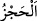
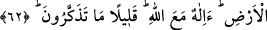
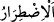
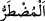

dikti. Yeryüzünde abdâl, evliya ve evtâddan sâbit dağlar da yarattı ki yeryüzü onlar
sebebiyle ayakta durur. Onların berekâtıyla yaratılmışlardan belâ ve musîbetler
uzaklaştırılır. Zâhirdeki dağlar İslam memleketlerine mahsus olmadığı gibi bu bâtındaki
dağlar da İslam diyarına mahsus değildir. Bilakis hem İslâm memleketlerine, hem de
küfür memleketlerine şâmildir. Çünkü mutlak olarak varlık için bir bakâ sebebi
lazımdır. Hem evliyâsına ve hem de düşmanlarına nimetini bol bol veren Allah’ın şanı
ne yücedir.
“İki deniz” yâni tatlı ve tuzlu iki deniz veya İran ve Rum denizi körfezleri “arasına
engel” Furkân sûresinde geçtiği gibi karışıp katışmasına mâni olan bir perde “koyan
mı?”
el-Müfredât’ta der ki: “__WORD__ aralarındaki bir fâsıla ile iki şeyi birbirinden men
etmektir. Şam ile çölleri birbirinden ayırdığı için böyle isimlendirilmiştir.”
Varlık âleminde veya bu eşsiz varlıkları benzersiz olarak yaratma konusunda
“Allah’tan başka bir ilâh mı var!” Yâni O’nunla beraber O’ndan başkası yoktur.
“Doğrusu onların çoğu (hakikatleri)” hiçbir şeyi“bilmiyorlar.” Bu yüzden son
derece açık olduğu halde üzerinde bulundukları şirkin bâtıl olduğunu anlamıyorlar.
62. (Onlar mı hayırlı) yoksa darda kalana kendine yalvardığı zaman karşılık
veren ve (başındaki) sıkıntıyı gideren, sizi yeryüzünün hakimleri kılan mı?
Allah’tan başka bir ilah mı var! Ne kadar da kıt düşünüyorsunuz!
“(Onlar mı hayırlı) yoksa darda kalana kendine yalvardığı zaman karşılık veren”
Yâni darlık ve sıkıntıya düştüğünde, duâ ile tazarru ve niyâzda bulunduğunda icâbet
eden, “ve (başındaki) sıkıntıyı gideren” yâni insandan üzüntü ve kederi kaldıran mı
hayırlıdır; yoksa O’na ortak koştukları putlar mı?
“__WORD__ kelimesi, “__WORD__dendir. Zarûret ise insanı sığınmaya muhtac kılan haldir. “__WORD__ (darda kalan)” hastalık, fakirlik, borç, boğulma, hapse düşme, zulme uğrama gibi
başa gelen musîbetlerin kendisini ilticâya, yalvarıp yakarmaya mecbur ettiği kimsedir.
Allah Teâlâ bu sıkıntıları ona şifâ vererek, zengin kılarak, borcunu gidermekle, hapisten
ve zulümden kurtarmakla giderir.
Şeyh Dâvûd Yemânî bir hastayı ziyarete gitmişti. Hasta, “Ey Şeyh, şifâ bulmam için
duâ et” dedi. Şeyh şu cevabı verdi: “Asıl sen duâ et, zira bîçâre olan sensin ve
bîçârelerin duâsına icâbet olunur. Çünkü onun niyâzı çoktur ve Hak sübhânehû ve teâlâ
bîçâreleri sever.
Mesnevî’de der ki: